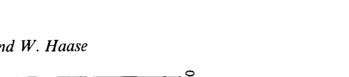
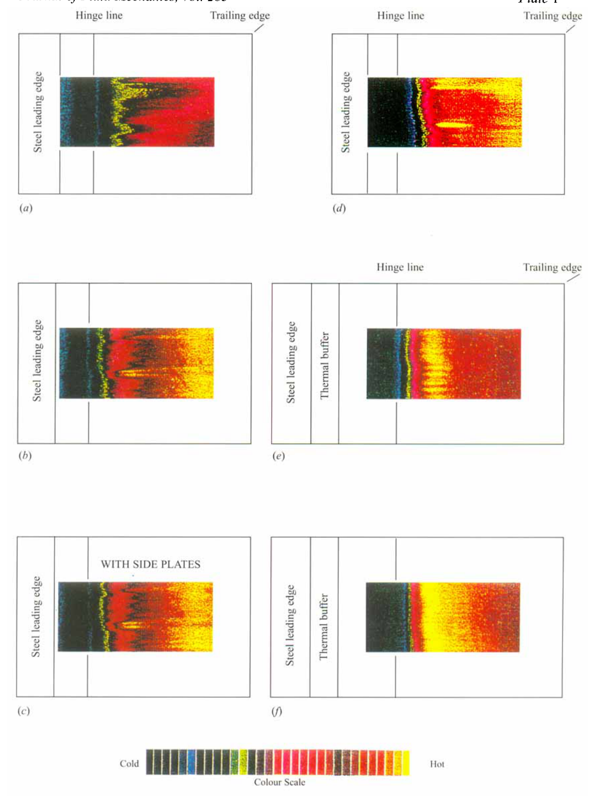
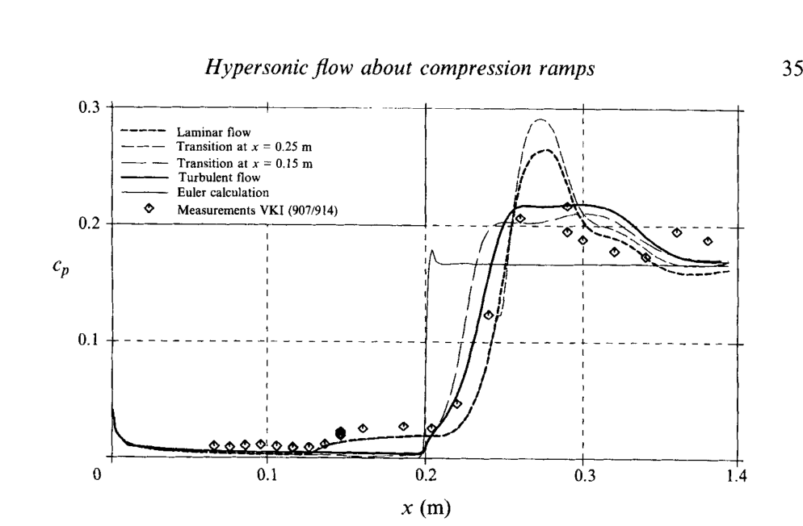
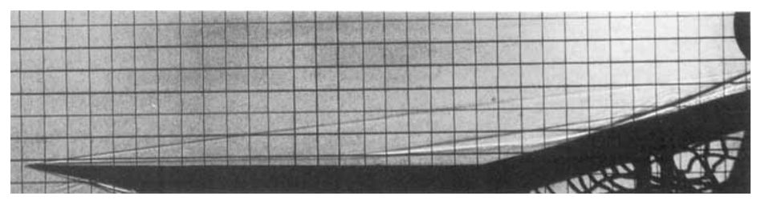

01中文摘要
本文给出 Mach 14 平板/压缩拐角流动的联合实验与计算研究。来流雷诺数（以前缘到铰链线距离为参考）为 4.5×10^5–2.6×10^6，壁温与总温之比为 0.12，涵盖完全层流强干扰、再附点附近转捩的过渡干扰，以及通过强制转捩近似实现的湍流干扰。研究重点是比较实验与计算的可信度，讨论层流-湍流转捩和再附区条纹加热现象。实验与计算的良好吻合加深了对流动机理和建模的理解；针对转捩干扰，作者提出一种避免转捩建模和分离区湍流建模的工程计算方法，用于估算干扰区的极端不利热流。
原始摘要（英文/原文）
Comprehensive results of a joint experimental and computational study of the two-dimensional flow field over flat plate/compression ramp configurations at Mach 14 are presented. These geometries are aimed to simulate, in a simplified manner, the region around deflected control surfaces of hypersonic re-entry vehicles. The test cases considered cover a range of realistic flow conditions with Reynolds numbers to the hinge line varying between 4.5 × 10 5 and 2.6 × 10 6 (with a reference length taken as the distance between the leading edge and the hinge line) and a wall-to-total-temperature ratio of 0.12. The combination of flow and geometric parameters gives rise to fully laminar strong shock wave/boundary layer interactions with extensive separation, and transitional interactions with transition occurring near the reattachment point. A fully turbulent interaction is also considered which, however, was only approximately achieved in the experiments by means of excessive tripping of the oncoming hypersonic laminar boundary layer. Emphasis has been placed upon the quality and level of confidence of both experiments and computations, including a discussion on the laminar-turbulent transition process and the associated striation phenomenon. The favourable comparison between the experimental and computational results has profided the grounds for an enhanced understanding of the relevant flow processes and their modelling. Particularly in relation to transitional shock wave/boundary layer interactions, where laminar-turbulent transition is promoted by the adverse pressure gradient and flow concavity in the reattachment region, a method is proposed to compute extreme adverse effects in the interaction region avoiding such inhibiting requirements as transition modelling or turbulence modelling over separated regions.
02阅读说明
类型：实验+数值（CFD验证）联合研究，J. Fluid Mech. 283 (1995) 17–42，共27页。材料为带页码全文与11幅抓取图件（含Table 1）；正文完整，但式(1)–(8)及部分图轴、图例在文本层缺失或错位，已回读PDF第4、5、9、15页核对式(1)–(4)、(6)–(8)与表2。图件均为位图，坐标数值只能按图注与正文读取，不能逐点定量。信息完整度较高：来流、模型、测点、不确定度、网格研究与三组对比齐全；分离区长度及分离/再附点坐标未给数值。页码用期刊印刷页（17–42），figures.page为bundle图件清单页码（PDF页）。 文章类型：期刊
03一句话核心与三句话摘要
M14、Tw/T0=0.12的15°压缩拐角：层流大分离、再附区快速转捩，转捩计算给出最恶劣热流上界。
- 高超声速再入飞行器控制面偏转会产生强激波/边界层干扰，但可供CFD验证的、工况与不确定度记录完整的实验数据很少。 AI概括
- 作者在VKI Longshot炮风洞以M=14.1、Re_hinge=4.5×10^5–2.6×10^6、Tw/T0=0.12测量15°斜板的压力与热流，并用全Navier–Stokes方程、Cebeci–Smith代数湍流模型和网格无关性研究进行对照。 原文明确
- 层流大分离使再附边界层显著变薄、虚原点移至再附点附近；转捩在再附区被逆压梯度与凹曲率迅速促发，并伴随有界的热流条纹；把转捩强制设在层流再附点下游可得最大分离范围与最高湍流热流上界。 AI概括
04核心内容清单
| 要点 | 类型 | 重要性 | 原文依据 | 属性 |
|---|---|---|---|---|
| 建立M14、Tw/T0=0.12、Re_hinge 4.5×10^5–2.6×10^6的平板/15°斜板实验数据库，覆盖层流、转捩与（扰流）湍流三类干扰。 | 实验数据库 | A | p.17 Abstract；pp.20–21 Table 2 | 原文明确 |
| 压力与热流测量经解析/半经验预测及与23篇文献约200数据点的峰值热流关联验证，具备CFD验证所需的置信度。 | 实验验证 | A | pp.24–25，Figs.1–3、式(4) | 原文明确 |
| 网格无关性研究表明分离区范围对网格最敏感；法向网格数比流向网格数更关键，最终用248×64计算case 2/3。 | 数值方法 | A | pp.31–33，Figs.7–9、Table 3 | 原文明确 |
| case 1（Re_hinge≈4.5×10^5）为完全层流分离，转捩发生在再附下游x≈0.12–0.22 m，λ_tr=0.06 m。 | 实验结果+计算 | A | pp.21、33，式(9) | 原文明确 |
| case 2（Re_hinge≈1.3×10^6）层流再附约x=0.245 m，转捩在再附点附近迅速完成；转捩设x=0.25 m的计算与测量最符。 | 实验+计算对比 | A | p.35，Figs.11–13 | 原文明确 |
| 晚转捩计算的峰值热流与摩阻高于纯层流和纯湍流计算：斜板压力更高、再附边界层更薄。 | 计算结果 | A | pp.36–37，Fig.12 | 原文明确 |
| 再附边界层显著变薄，虚原点应移至铰链线与再附点之间；case 1等效增长长度约30 mm，case 2约40 mm，case 3层流/晚转捩约25 mm、纯湍流约70 mm。 | 计算结果 | A | pp.33–34、36–37、39 | 原文明确 |
| 再附区出现稳态流向Görtler型条纹热流，幅值以当地斜板湍流热流为上界，随斜板角/Re增大而衰减，完全湍流后消失，且与侧板无关。 | 实验观察 | A | pp.27–29，Figs.5–6 | 原文明确 |
| 分离/再附激波相互作用造成斜板压力过冲与欠冲；参考温度法假设全程为无黏斜板压力，仅在激波-激波干扰不强时适用。 | 机理论证 | B | pp.34–35，Fig.11 | 原文明确 |
| 工程方法：网格无关纯层流计算给最大干扰范围，再在层流再附点下游强制转捩给最高湍流热流上界。 | 方法建议 | A | pp.38–40，§6 | 原文明确 |
| 扰流后的“全湍流”实验仅在斜板可信，平板段受3 mm球带强烈扰动，未必达到平衡湍流，比较须谨慎。 | 作者限定 | B | pp.21、37–38，Fig.15 | 原文明确 |
| 文中未给出分离区长度、分离/再附点坐标的定量值，也未给出热流条纹波长与幅值的具体数字。 | 材料局限 | C | 全文 | AI概括 |
05引言：研究问题与领域缺口
高超声速再入飞行器的体襟翼、升降副翼与方向舵偏转会在迎风边界层与斜板激波之间形成强干扰，导致分离、控制效率下降与结构过热（p.17）。平板+压缩斜板是模拟偏转控制面最简单的二维构型，已有大量研究，但真正满足CFD验证要求的、记录完整的实验很少；以往验证（Holden & Moselle的M14层流案例、Settles等的M3湍流案例）受网格无关性不足、湍流模型缺陷与测量不确定度限制（pp.17–18）。本文目标：在M14、层流来流、Re_hinge 4.5×10^5–2.6×10^6、Tw/T0=0.12条件下提供层流、转捩与湍流三类干扰的可靠实验-计算对照，并给出工程上估算最恶劣干扰的方法。
06流动条件与几何构型
| 项目 | 数值/描述 | 依据 | 备注 |
|---|---|---|---|
| 风洞与气体 | VKI Longshot自由活塞炮风洞；试验气体与驱动气体均为干燥氮气；驱动气初始300 bar、环境温度 | p.18，§2.1 | |
| 驻室条件 | 活塞压缩后驻室压力最高4000 bar、温度最高2800 K；驻室容积320 cm³ | p.18，§2.1 | |
| 喷管与试验段 | 轴对称M14喷管，出口直径42.7 cm，均匀试验核心直径24 cm | p.19，§2.1 | |
| 试验时间 | 10–15 ms；驻室条件按约9 ms特征时间准指数衰减；分离区建立时间约0.5 ms | p.19，§2.1 | |
| 来流马赫数 | 14.1（三个计算工况相同） | p.21 Table 2；Fig.1图注 | |
| 单位雷诺数（case 1） | 6.5×10^6 m^-1 | p.21 Table 2 | |
| 单位雷诺数（case 2） | 6.5×10^6 m^-1 | p.21 Table 2 | |
| 单位雷诺数（case 3） | 13.0×10^6 m^-1 | p.21 Table 2 | |
| Re_hinge（case 1） | ≈4.5×10^5（Re_unit×0.07 m=4.55×10^5） | p.17摘要给范围；p.21 Table 2 | 数值由表2相乘得到，属AI概括 |
| Re_hinge（case 2） | ≈1.3×10^6（6.5×10^6×0.20 m） | p.17摘要；p.21 Table 2 | AI概括 |
| Re_hinge（case 3） | ≈2.6×10^6（13.0×10^6×0.20 m） | p.17摘要；p.21 Table 2 | AI概括 |
| 总温 T0 | 2385 K（三个计算工况相同） | p.21 Table 2 | |
| 壁温 Tw | 290 K | p.21 Table 2；Fig.1图注 | |
| 壁温/总温比 | 0.12（290/2385≈0.122） | p.17 Abstract | |
| 自由流静温 T∞ | 58.5 K（图注给出） | p.22 Fig.1图注；p.31 Fig.7图注 | |
| 斜板角 | 15°（三个主工况）；另在Mach 6参数研究中使用10°、15°、20° | p.21 Table 2；p.28 Fig.6图注 | |
| 前平板长度（case 1） | 0.07 m | p.21 Table 2 | |
| 前平板长度（case 2） | 0.20 m | p.21 Table 2 | |
| 前平板长度（case 3） | 0.20 m | p.21 Table 2 | |
| 斜板长度与展长 | 后板长200 mm；模型展长200 mm | p.19，§2.2 | |
| 前缘厚度（Model A） | 70±10 µm；铰链距前缘70 mm；同轴热电偶74–240 mm、间距10 mm | p.20，Table 1 | |
| 前缘厚度（Model B） | 55±3 µm；铰链距前缘200 mm；压力66–200 mm/10 mm，压力+同轴热电偶200–380 mm/10 mm | p.20，Table 1 | |
| 前缘厚度（Model C） | 低Re实验35±10 µm；高Re实验15±5 µm；铰链距前缘200 mm；薄膜计100–200 mm/4 mm，同轴热电偶200–305 mm/5 mm | p.20，Table 1 | |
| 边界层状态 | 来流为层流；case 1完全层流分离、下游转捩；case 2/3再附点附近转捩；扰流case 3近似全湍流 | pp.17、21、27 | δ、θ、Re_δ未给出 |
| 扰流方式（case 3） | 前缘下游35–50 mm处布置3 mm直径紧密排列球带 | p.21，§2.3 | |
| 峰值压力 | 约0.1 bar | p.24，§3.1 | |
| 斜板峰值热流 | 约700 kW m^-2 | p.24，§3.1 | |
| 测量不确定度 | M±1%、Re±10%、T∞±7.5%（RSS）；c_p±15%（平板）/±3%（斜板）；c_h±13% | pp.19、21，§2.1、§3.1 | |
| γ与普朗特数 | γ=1.4；层流Pr=0.72；湍流Prt=0.90 | p.29，§4.1 | |
| 来流均匀性 | 皮托压变化多在测量不确定度内；沿250 mm试验段马赫数约增1.5% | p.19，§2.1 |
07核心现象与关键参数
| 参数 | 定义 | 数值 | 关系/说明 | 依据 |
|---|---|---|---|---|
| 压力系数 c_p | c_p=(p−p∞)/(½ρ∞U∞²)=(p−p∞)/(γ p∞ M∞²/2) | 用于全部压力分布 | 平板不确定度±15%，斜板±3% | p.20，式(1) |
| 摩阻系数 c_f | c_f=τ_w/(½ρ∞U∞²) | 网格研究图给出(x×100)量级约0–1.5 | 用于分离点与网格敏感性判断 | p.20，式(2)；p.32 Fig.8 |
| 热流系数 c_h | 修正Stanton数：c_h=q̇/(ρ∞U∞c_p∞(T0−Tw)) | Fig.12/14纵轴10^-4–10^-2量级 | 不确定度±13% | p.20，式(3) |
| 峰值热流关联式 | q̇_pk/q̇_ref=B(Re*_pk)^n[p_pk u_pk/(p_ref u_ref)]^{1−n}(x_pk/L_pk)^n | 层流：a=0,B=1,n=0.5；全湍流：a=0,B=1,n=0.2；湍流峰值/层流参考：a=0.3,B=0.072,n=0.2 | Re*按Eckert参考温度定义；L_pk为再附边界层有效增长长度 | p.25，式(4) |
| 转捩间歇因子 γ_tr | γ_tr=1−exp(−0.412ξ²) | 0→1的通用间歇函数 | ξ为转捩区归一化坐标 | p.30，式(6) |
| 归一化转捩坐标 ξ | ξ=(x−x_tr)/λ_tr | 以x_tr为转捩起始 | 需给定x_tr与λ_tr | p.30，式(7) |
| 转捩区尺度 λ_tr | λ_tr=x(γ_tr=0.75)−x(γ_tr=0.25) | case 1取0.06 m | 由热流测量确定 | p.30，式(8)；p.33式(9) |
| case 1转捩起始 x_tr | 间歇函数起始位置 | 0.12 m（转捩区约0.12–0.22 m） | case 1唯一长转捩区算例 | p.33，式(9) |
| case 2层流再附位置 | 计算的最大压力/热流梯度点 | 约x=0.245 m；转捩设x=0.25 m | 斜板起点（铰链）在x=0.20 m | p.35，§5.2 |
| 峰值热流处边界层厚度（case 1） | 计算得到的边界层厚度 | 约0.6 mm | 对应等效增长长度约30 mm | p.34，§5.1 |
| 有效增长长度 L（case 2） | 由虚原点到峰值热流位置的等效长度 | 层流/晚转捩约40 mm | 虚原点位于铰链与再附之间 | p.36，§5.2 |
| 有效增长长度 L（case 3） | 同上 | 层流/晚转捩约25 mm；纯湍流约70 mm | 湍流case虚原点在铰链上游不远处 | p.39，§5.3 |
| 网格分辨率（Table 3） | 分离点处边界层内/亚声速层内单元数 | 352×160：109/66；176×80：55/36；88×40：28/18；44×20无分离 | 用于网格无关性判断 | p.33，Table 3 |
| 壁面 y+ | 第一层网格无量纲壁面距离 | 约1或更小 | 保证黏性底层解析 | p.30，§4.1 |
| 分离区长度/高度 | 分离泡几何尺度 | 文中未提及定量值（仅称extensive/significant separation） | 由图11压力平台与纹影定性给出 | pp.17、35 |
08方法与数据
实验：VKI Longshot自由活塞炮风洞，N2，驱动气300 bar，驻室最高4000 bar/2800 K，M14轴对称喷管（出口直径42.7 cm、均匀核心24 cm），试验时间10–15 ms、条件按约9 ms特征时间准指数衰减；由驻室总压、皮托压与球头驻点热流确定M、单位Re与静温，RSS不确定度M±1%、Re±10%、T∞±7.5%；模型为前平板（0.07或0.20 m、前缘50 µm量级）+15°后板（长200 mm、展向200 mm），B/C加侧板；Endevco压阻传感器测压，平板用薄膜电阻温度计、斜板用同轴热电偶，半无限平板法处理瞬态传热，并配纹影；压力系数不确定度±15%（平板）/±3%（斜板），热流系数±13%。数值：积分形式二维非定常可压缩Navier–Stokes，有限体积，五步Runge–Kutta，JST二阶/四阶混合人工耗散，多重网格，H型网格，壁面y+≈1；Cebeci–Smith代数湍流模型+Stock–Haase长度尺度，Prt=0.90、Pr=0.72、γ=1.4；等温无滑移壁、壁法向零压梯度；转捩用“开关”或在x_tr处启用Dhawan–Narasimha间歇函数；先以496×96与248×64体积网格试算，后改用352×160、176×80、88×40、44×20体积（353×161、177×81、89×41、45×21节点）序列做无关性研究，最终case 2/3用248×64。
| 项目 | 内容 | 依据 | 备注 |
|---|---|---|---|
| 研究类型 | 风洞实验与全Navier–Stokes数值模拟联合验证研究 | p.17，Abstract | |
| 风洞 | VKI Longshot自由活塞炮风洞，N2，M14轴对称喷管，试验时间10–15 ms | pp.18–19，§2.1 | |
| 来流参数确定 | 由驻室总压、试验段皮托压和球头驻点热流反推M、单位Re与静温 | p.19，§2.1 | |
| 模型 | 前平板（0.07/0.20 m，前缘50 µm量级）+15°后板（200 mm），展长200 mm；B/C加侧板覆盖干扰区 | pp.19–20，§2.2，Table 1 | |
| 压力测量 | 微型Endevco压阻传感器，响应时间不足1 ms；中心线及展向多点 | pp.19–20，§2.2 | |
| 热流测量 | 平板薄膜电阻温度计、斜板同轴热电偶；半无限平板法（Schultz & Jones 1973） | pp.19–20，§2.2 | |
| 流场显示 | 纹影照相；用于判断层流/湍流边界层与分离激波位置 | p.20，§2.2；p.26，§3.2 | |
| 转捩检测 | 纹影颗粒结构+50 kHz采样、24 kHz低通的表面温度时序噪声跳变+与层流/湍流参考温度预测比较 | p.26，§3.2 | |
| 实验验证 | 压力对比Hayes–Probstein弱黏性干扰+Lukasiewicz爆炸波、Hankey–Holden平台压、Sullivan过冲；热流对比Eckert参考温度法；峰值热流对比式(4)关联 | pp.24–25，Figs.1–3 | |
| 控制方程 | 积分形式二维非定常可压缩Navier–Stokes，理想气体状态方程闭合 | p.29，§4.1 | |
| 数值格式 | 有限体积；五步Runge–Kutta（Jameson–Schmidt–Turkel系数）；二阶/四阶混合人工耗散并针对高马赫数修正；多重网格/多级网格 | pp.29–30，§4.1 | |
| 湍流模型 | Cebeci–Smith代数模型，涡黏性与分子黏性相加；Stock–Haase(1989)提供边界层长度尺度；不用于大分离区 | p.29，§4.1 | |
| 转捩处理 | 在指定x“开关”湍流模型；长转捩区用Dhawan–Narasimha间歇函数(6)–(8)，case 1取x_tr=0.12 m、λ_tr=0.06 m | pp.30、33，§4.2、式(9) | |
| 边界条件 | 壁面不可滑、等温、壁法向零压梯度；远场为纯流入；出口对密度、质量通量与总能量线性外推 | p.30，§4.1 | |
| 网格 | H型网格，外边界预适配外激波，壁法向几何拉伸；case 1用353×161点（352×160单元），case 2/3用249×65点（248×64单元）；首层法向尺寸5.0×10^-6 m（case 1）、5.0×10^-5 m（case 2/3） | p.21 Table 2；p.30，§4.1 | |
| 收敛判据 | L2残差下降约3.5个量级；力系数变化约0.1%；分离流另以分离区长度/分离点位置判断 | p.30，§4.1 | |
| 网格无关性 | 先试496×96、248×64，后改用352×160、176×80、88×40、44×20序列；两套最细网格压力/摩阻/热流基本一致，分离范围仅最细两套趋于无关 | pp.31–33，Figs.7–9、Table 3 | |
| 数值验证 | 与Holden & Moselle M14.1、Re_hinge=1.04×10^5的15°/24°斜板算例历史计算对照；24°分离被高估且实验存在有限展向效应 | pp.30–31，§4.3 | |
| 不确定度/重复性 | 压力与热流重复性见图1、图2；290 mm处热流展向变化为真实条纹而非散点；侧板与展向测点显示15°有限展向效应小 | pp.21–24，§3.1 |
09核心推导与公式
原文未给出从守恒律出发的完整解析推导；以下仅列出材料中可核对的定义或建模链，不补写教科书推导。
本文为实验+CFD验证研究，未给出从守恒律出发的解析推导。文中的定量关系均为定义或经验关联：系数定义(1)–(3)、峰值热流关联(4)、Dhawan–Narasimha间歇函数(6)–(8)。CFD部分直接离散积分形式Navier–Stokes方程并采用Cebeci–Smith代数湍流模型，亦无模型推导。
关键假设
- 峰值热流关联假设再附区传热可由参考温度法与Reynolds类比描述，且峰值点局部压力、速度与有效增长长度已知
- 有效增长长度L_pk用Bushnell–Weinstein(1968)的再附边界层变薄估算，虚原点移至再附点附近
- 间歇函数假设转捩区统计相似，可用单一通用函数γ_tr=1−exp(−0.412ξ²)描述，x_tr与λ_tr为两个自由参数
- 参考温度法假设斜板压力近似为无黏斜板压力，激波-激波干扰不强时成立
- CFD假设等温壁、壁法向零压梯度、远场纯流入，湍流为代数涡黏模型且不用于大分离区
适用边界：式(4)中参数a在公式图像中的具体位置受限于材料无法确认（文中仅给a=0/0.3的取值）；关联式需已知峰值点局部压力、速度与有效增长长度L_pk，后者依赖Bushnell–Weinstein估算；未给出关联式的不确定度分解；间歇函数需外部给定x_tr与λ_tr；参考温度法在强激波-激波干扰或前体激波入射时不适用（pp.34–35）。
10结果：主要发现与关键证据
实验验证：压力与Hayes–Probstein弱黏性干扰+Lukasiewicz爆炸波、Hankey–Holden平台压、Sullivan双楔过冲预测相符；热流与Eckert参考温度法相符；峰值压力约0.1 bar，斜板峰值热流约700 kW/m²（p.24）。转捩判据：纹影颗粒结构+50 kHz表面温度时序的噪声跳变+与层流/湍流参考温度预测比较；转捩在再附点附近迅速发生，仅最低Re的case 1在x≈0.12–0.22 m的下游长距离内转捩（λ_tr=0.06 m，x_tr=0.12 m）。条纹热流：再附区出现流向Görtler型涡导致的展向热流条纹，幅值以当地斜板湍流热流为上界，随斜板角/Re增大而减弱，完全湍流后消失，加侧板不影响（pp.27–29，Mach 6红外热像）。CFD：case 1层流分离与纹影一致，峰值热流处边界层厚约0.6 mm、等效增长长度约30 mm；case 2层流再附约x=0.245 m，转捩设x=0.25 m时与测量最符，且其峰值热流与摩阻高于纯层流与纯湍流计算；case 3加扰流后平板完全附着、斜板湍流，平板段被高估、斜板段吻合；层流/晚转捩的等效增长长度约25 mm，纯湍流约70 mm。
| 发现 | 证据 | 证据类型 | 强度 | 位置 | 属性 |
|---|---|---|---|---|---|
| M14、Tw/T0=0.12条件下，15°斜板在Re_hinge 4.5×10^5–2.6×10^6范围内产生强层流分离，分离范围随Re增大而缩小并趋于再附点附近转捩。 | case 1层流大分离、case 2/3再附点附近转捩；压力与热流分布（Figs.1、11、12） | 实验+计算 | 强 | pp.21、33–37 | 原文明确 |
| 网格无关性对分离区范围最敏感；仅最细两套网格（176×80/352×160）给出近似无关的分离范围，法向分辨率比流向更关键。 | Figs.7–9压力/摩阻/热流对比；Table 3边界层内单元数109/55/28 | 数值试验 | 强 | pp.31–33 | 原文明确 |
| 强干扰使再附边界层显著变薄，虚原点应移至再附点附近；case 1峰值热流处边界层厚约0.6 mm、等效增长长度约30 mm。 | 计算边界层厚度与等效增长长度；与Bushnell–Weinstein估算一致 | 计算结果 | 强 | p.34，§5.1 | 原文明确 |
| 晚转捩计算（转捩设在层流再附点下游）给出比纯层流与纯湍流都高的峰值热流和摩阻，可作为最恶劣热流上界。 | case 2转捩设x=0.25 m的Fig.12峰值高于laminar与turbulent曲线；斜板压力更高、边界层更薄 | 计算结果 | 强 | pp.36–37，§5.2 | 原文明确 |
| 再附区存在稳态流向条纹热流，幅值以当地斜板湍流热流为上界，随斜板角/Re增大而减弱，完全湍流后消失，加侧板不影响。 | Mach 6红外热像Fig.5；展向最小-最大热流带Fig.6；290 mm处展向测量 | 实验观察 | 强 | pp.27–29，Figs.5–6 | 原文明确 |
| 分离激波与再附激波相互作用导致斜板压力过冲/欠冲，直接反映在热流分布；参考温度法假设无黏斜板压力，仅在干扰不强时适用。 | Fig.11压力分布与Fig.12热流的对应；p.34讨论 | 实验+计算 | 中 | pp.34–35 | 原文明确 |
| 扰流后的“全湍流”实验仅在斜板段与计算吻合，平板段被3 mm球带强烈扰动而热流被高估，不能视为平衡湍流平板边界层。 | Fig.14有/无扰流热流对比；Fig.15纹影显示强扰动 | 实验+计算 | 中 | pp.37–38，Figs.14–15 | 原文明确 |
| 峰值热流关联式可把本文数据与23篇文献约200个数据点、M5–20、五个量级Re统一到±20%带内。 | 式(4)与Fig.3；层流/湍流两组关联带 | 经验关联 | 中 | p.25，Fig.3、式(4) | 原文明确 |
| 完全层流与完全湍流两种极端计算给出的斜板干扰范围相近：附着厚湍流边界层与薄层流分离边界层对压力恢复的损害可能相当。 | Fig.11中laminar与turbulent压力分布范围相近；p.37讨论 | 计算结果 | 中 | p.37，§5.2 | 原文明确 |
11机制解释与论证链
作者给出的机制链（pp.26–29、34–37、39）：15°斜板造成强逆压梯度→层流边界层分离，形成分离激波与再附激波；两激波在斜板附近相互作用，使斜板压力出现超过无黏斜板值的过冲及随后的欠冲→再附时边界层被强烈压缩、显著变薄，故其虚原点应设在铰链线与再附点之间，峰值热流出现在再附下游的“颈部”→再附区同时具有强逆压梯度与凹曲率，二者迅速放大扰动，促使层流转捩；转捩伴随流向Görtler型涡，形成展向条纹热流→湍流边界层增长更快，条纹幅值以当地湍流热流为上界，完全湍流后条纹消失。由于转捩在再附点附近极快，分离区范围与时均压力仍近似由层流解控制，故“层流算最大分离范围+再附后强制转捩”可给出最恶劣热流。上述链条中，Görtler涡与转捩的因果、以及条纹与前沿厚度扰动的对应，原文多引文献支持，属作者解释与AI概括的结合。
12讨论：结论、贡献与局限
机制链：15°斜板产生强逆压梯度→层流边界层分离→分离激波与再附激波在斜板附近相互作用，形成压力过冲/欠冲并控制斜板压力与热流→再附时边界层被强烈压缩变薄，虚原点应移至再附点附近（Bushnell–Weinstein）→再附区逆压梯度与凹曲率迅速促发转捩，湍流边界层增长更快、条纹热流出现→完全湍流后条纹消失。作者据此提出工程方法：先做网格无关的纯层流计算得到最大干扰范围，再在层流再附点下游强制转捩，得到斜板上可能出现的最高湍流热流；该方法避免在分离区做转捩/湍流建模（pp.38–40）。局限：湍流算例仅靠3 mm球带扰动近似实现，平板段未必达到平衡湍流；Cebeci–Smith不能用于大分离；峰值热流关联需已知峰值压力与有效增长长度；实验为短时风洞、条件衰减，分离流建立时间虽约0.5 ms但仍属准定常处理。
作者结论
作者结论（pp.39–40，§6）：(1) 在M14、Tw/T0=0.12、Re_hinge 4.5×10^5–2.6×10^6范围内获得了经解析预测与半经验关联验证的高质量实验数据，并用全Navier–Stokes方法与网格无关性研究完成对照；强层流干扰产生大分离区并使再附边界层显著变薄，可通过把虚原点移至再附点附近来计入，转捩后湍流增长更快使该效应更强。(2) 分离激波与再附激波的相互作用会显著影响斜板压力与热流；本文中等斜板角、无前体激波时可用无黏斜板压力近似，但一般情况下必须计入激波-激波干扰。(3) M14平板边界层非常稳定、难以用扰流促转捩，而再附区逆压梯度与凹曲率极有效地促发转捩，并伴随Görtler型条纹热流；条纹幅值以当地湍流热流为界，完全湍流后消失。(4) 层流、转捩、湍流干扰在网格无关条件下均可由所用Navier–Stokes方法合理预测，湍流情形需代数湍流模型且不能有大分离；对转捩干扰，建议以“网格无关层流计算定最大干扰范围+层流再附点下游强制转捩”估算最高湍流热流。
主要贡献
- 提供M14、Tw/T0=0.12、Re_hinge 4.5×10^5–2.6×10^6的平板/15°斜板实验数据库，含压力、热流、纹影与不确定度。
- 完成系统的网格无关性研究，指出分离区范围对网格最敏感、法向分辨率更关键。
- 定量证实强干扰使再附边界层变薄并给出等效增长长度（30/40/25/70 mm）。
- 揭示再附区条纹热流与转捩的联系及其有界性（以当地湍流热流为上界）。
- 提出可用于工程的最恶劣热流估算方法：层流最大分离+再附后强制转捩。
局限与未解决问题
作者承认：全湍流实验仅靠3 mm球带扰动近似实现，平板段可能未达平衡湍流，结果须谨慎（p.21）；峰值热流关联需已知峰值压力与有效增长长度，且参考温度法在强激波-激波干扰下不适用（pp.34–35）；Cebeci–Smith模型不能用于大分离区（p.29）。AI识别的局限：仅一个马赫数与一个斜板角（15°）进入主对比，Mach 6条纹数据来自另一实验系列；分离区长度、分离/再附点坐标、条纹波长与幅值均未给数值；短时风洞条件持续衰减，虽分离建立时间约0.5 ms，仍按准定常处理；热流不确定度±13%、压力±15%（平板），对峰值附近定量比较构成限制；转捩位置含经验判断与两个自由参数；网格研究显示分离范围仅“接近”无关，未给出严格收敛阶。
13对高速流动与工程的意义
对高速流动与工程的意义：为高超声速控制面（体襟翼、升降副翼）的激波/边界层干扰提供了可直接用于CFD验证的M14数据集与明确的误差带；给出“层流最大分离+再附后强制转捩”的工程估算流程，可在不依赖转捩/分离区湍流模型的情况下给出热防护设计所需的最恶劣热流上界；强调斜板压力过冲/欠冲与激波-激波干扰对热流的影响，对再入飞行器、进气道隔离段与叶栅中的压缩拐角均有参考价值（外推属AI推断）。本文能回答该M14、15°、冷壁条件下的压力/热流水平、转捩位置与网格需求；不能回答其他马赫数、斜板角、三维构型、真实气体效应或长时间飞行条件下的定量规律。
14核心图件




15可引用原文素材
| 原文短句 | 可支持的观点 | 位置 | 使用建议 |
|---|---|---|---|
| “a wall-to-total-temperature ratio of 0.12” | 冷壁条件 | p.17，Abstract | 标明与飞行器热环境的对应 |
| “strong shock wave/boundary layer interactions with extensive separation” | 强干扰与大分离 | p.17，Abstract | 概括层流工况 |
| “transition was found to be occurring rapidly close to the reattachment point” | 再附点附近快速转捩 | p.27，§3.2 | 核心实验观察 |
| “the measured heat transfer rises to the predicted turbulent level” | 再附后热流达湍流水平 | p.35，§5.2 | 说明转捩对热流的影响 |
| “the maximum possible extent of the interaction and the associated separated region” | 层流计算给最大干扰范围 | p.36，§5.2 | 工程方法依据 |
| “higher peak heat transfer and skin friction than both the fully laminar and fully turbulent computations” | 晚转捩给最恶劣热流 | p.37，§5.2 | 最恶劣上界结论 |
| “steady streamwise striations have been found to be closely linked to the laminar-turbulent transition process” | 条纹热流与转捩相关 | p.29，§3.3 | 条纹机理 |
| “the Mach 14 flat plate boundary layer was found to be very stable and transition tripping was particularly difficult” | M14平板难促转捩 | p.39，§6 | 讨论扰流实验的局限 |
16最终核验
| 核验项 | 结论 |
|---|---|
| 仅基于全文 | 是：仅使用bundle全文、图注、图件清单，并回读原PDF第4、5、9、15页核对式(1)–(4)、(6)–(8)与表2；未引入外部知识。 |
| A 级要点有依据 | 是：A级条目均带印刷页码、节号、式号、表号或图号；工况、网格、转捩位置、等效增长长度与最恶劣热流结论均可在正文对应。 |
| 属性标注 | 是：three_sentence、core_points、findings逐条标注原文明确/AI概括/AI推断；由Re_unit×平板长度换算的Re_hinge在note中标为AI概括。 |
| 覆盖范围 | 覆盖Introduction、VKI实验（风洞、模型、测量、试验矩阵）、测量质量与转捩/条纹、数值方法（格式、湍流模型、转捩长度、验证、网格无关性）、三组对比与Conclusions；IMRaD四节实质填写。 |
| 无编造 | 是：未编造页码、图号、公式或数据；分离区长度、分离/再附点坐标、条纹波长等缺失项写“文中未提及”；式(4)参数a位置与图轴读数不清处已注明无法确认。 |
需回原文确认
- 分离区长度、分离点与再附点的精确x坐标为何？文中只给定性描述与层流再附约0.245 m（case 2）。
- Re_hinge的准确定义与数值：摘要给4.5×10^5–2.6×10^6，是否即Re_unit×平板长度？case 1实际为4.55×10^5还是4.5×10^5？
- 式(4)中参数a（0或0.3）在关联式里的具体位置是什么？公式图像与文本层均未能确认。
- 条纹热流的波长、幅值与Görtler涡数是否有定量测量？本文只给红外图像与最小-最大带。
- 3 mm球带扰流后平板段边界层是否真正达到平衡湍流？作者自己存疑。
- 表2中case 1首层法向尺寸5.0×10^-6 m与case 2/3的5.0×10^-5 m相差一个量级，是否笔误或有意？
- 短时风洞条件持续衰减对分离区与峰值热流的定量影响有多大？文中仅论证建立时间约0.5 ms。
- Mach 6条纹数据与M14主工况之间，条纹幅值/波长如何随Mach数标度？文中未给。
17关联文献
依据标签、板块、构型与作者脉络自动关联，可据此追踪同一问题的前序与后续工作。
18引用格式
选择期刊风格后复制；出处保留原刊名。BibTeX 可直接用于 LaTeX。
引用格式
Simeonides, G. & Haase, W. 1995 Experimental and computational investigations of hypersonic flow about compression ramps. Journal of Fluid Mechanics 283, 17–42. https://doi.org/10.1017/S0022112095002229
PDF上传 PDF 并更新本页
本页缺少全文、摘要或图件时，可在浏览器本地补入 PDF。解析完全在本机完成，不上传网络；完成后会更新本页的 PDF 打开链接、原摘要、IMRaD 机器抽取、关键句与含图页面。复杂的公式语义与中文深度解读仍以原文和既有精读记录为准。
Zotero 笔记摘录
实验和数值都做了，压缩拐角，重点讨论转捩、Gortler涡加热和CFD网格/收敛判据。提出了一种工程方案：先层流计算获得最大分离范围，再在再附下游打开湍流模型，得到热流上界估计 峰值热流通用式： 再附边界层有效增长长度： 简化峰值热流式： 转捩间歇因子估计：